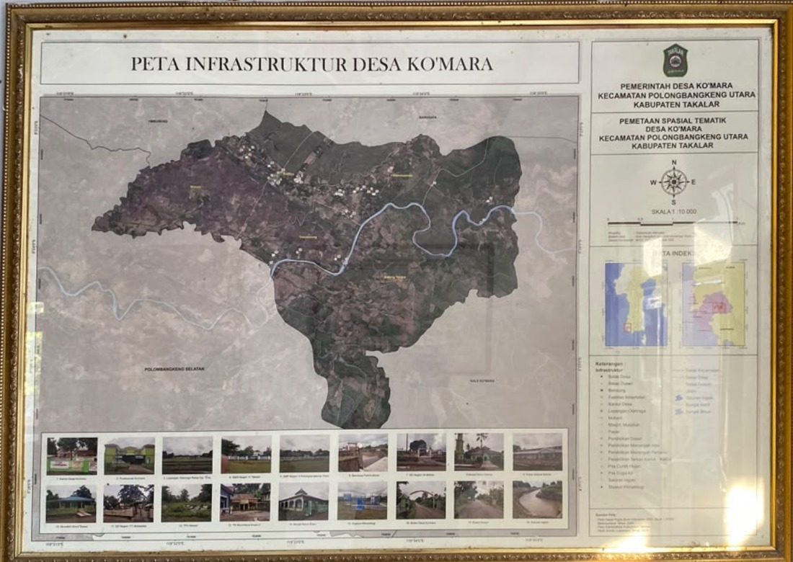

Desa Ko'Mara terletak di Kecamatan Polongbangkeng Timur, Kabupaten Takalar, Provinsi Sulawesi Selatan. Secara administratif, wilayah desa berbatasan dengan desa-desa tetangga di sekitarnya dan memiliki akses jalan penghubung ke pusat kecamatan maupun kabupaten.

Memuat narasi geografi...
Desa Ko'Mara terbagi menjadi beberapa dusun/lingkungan yang masing-masing dikepalai oleh seorang kepala dusun untuk mendukung efektivitas pelayanan kepada masyarakat.